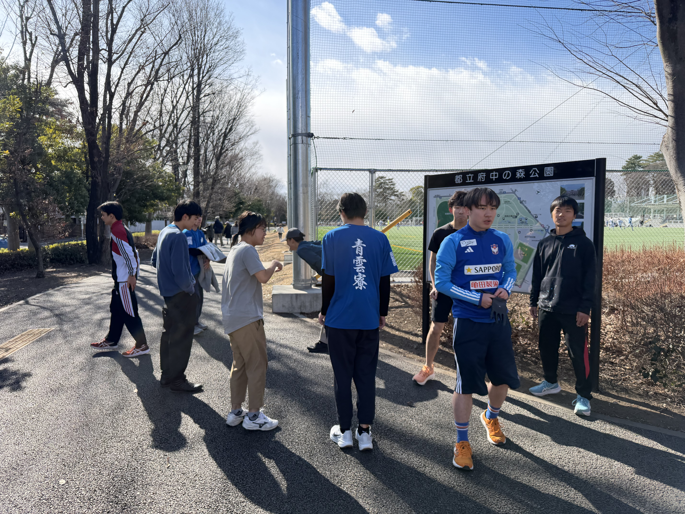
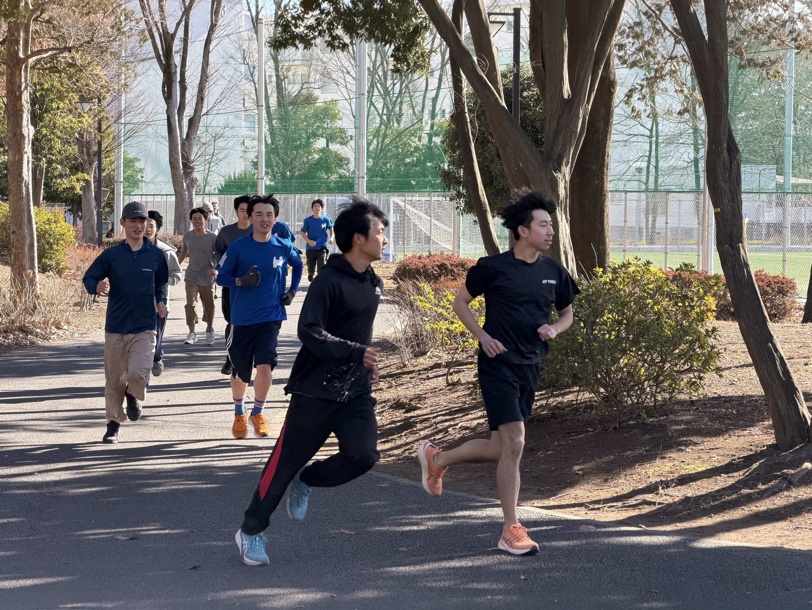
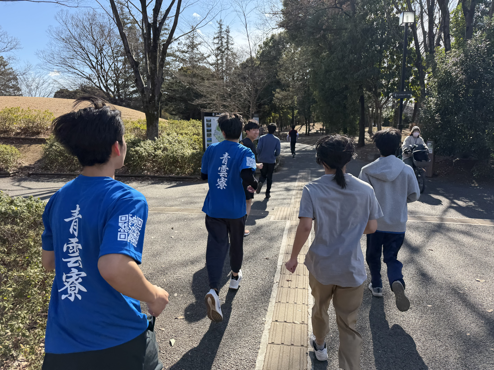
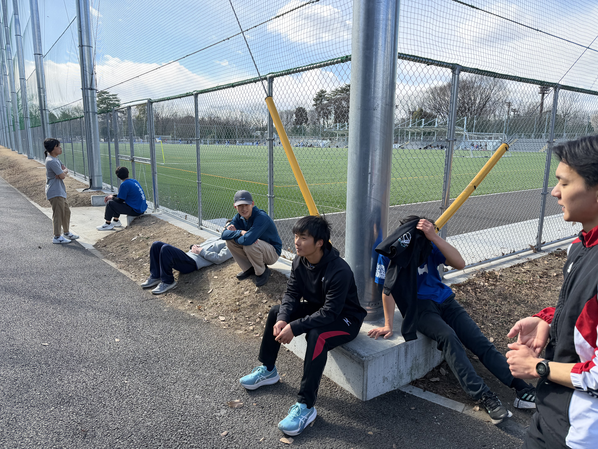
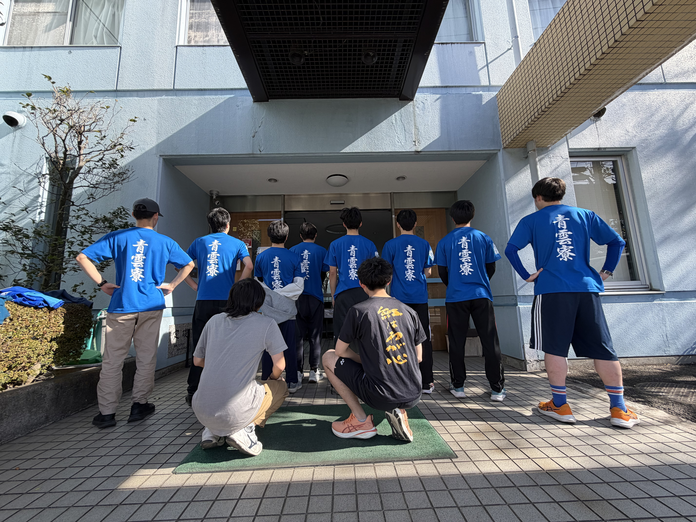

府中駅伝練習会2

1月25日、府中の森公園にて府中駅伝（2月11日開催）に向けた合同練習を行いました。今回は寮生10人が参加し、約2kmのコースでペース走を実施しました。個人の走力を高めるだけでなく、襷をつなぐ駅伝ならではの一体感を意識しながら、声を掛け合って練習を進めました。
府中の森公園での約2km練習
当日はまず集合後にコースを確認し、ウォーミングアップを行ってから練習を開始しました。走り出す前から自然と会話が生まれ、初参加の寮生も含めて良い雰囲気でスタートできました。走行中はペースの目安を共有し、きつい区間では互いに励まし合いながら走り切りました。


寮生一丸で府中駅伝へ
府中駅伝は、個々の実力だけでなく、チームとしての連携が結果を左右する大会です。練習後には「当日の走順」「区間ごとの目標ペース」「声掛けの仕方」などを話し合い、寮生一丸となって本番に向けた準備を進めています。日常の忙しさの中でも、同じ目標に向かって集まれるのが寮の強みだと改めて感じられました。

オリジナルTシャツを作成、本番は全員で着用
本大会に向けて、青雲寮オリジナルTシャツも作成しました。表面には富山県の形をあしらい、袖には青雲寮ホームページへアクセスできるQRコード、背中には大きく「青雲寮」の文字を入れています。当日はこのTシャツを全員で着用し、青雲寮としての一体感と存在感を示しながら走る予定です。応援いただけましたら幸いです。

